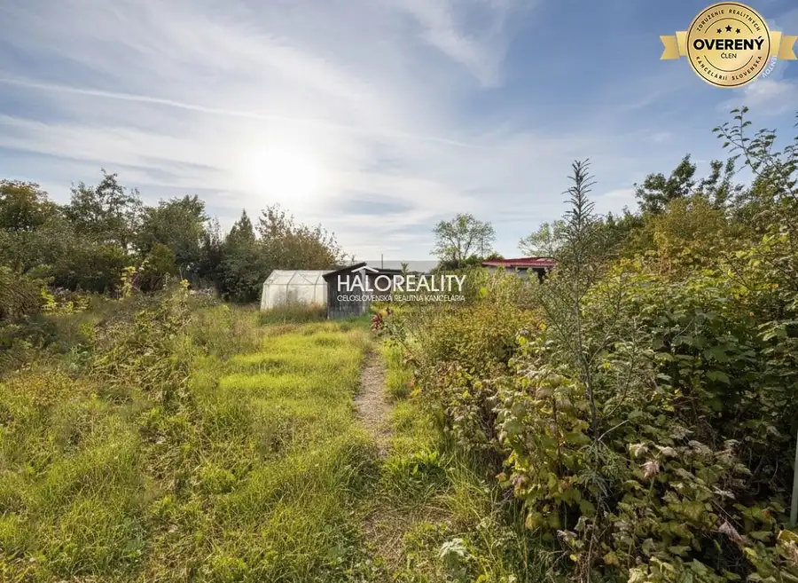
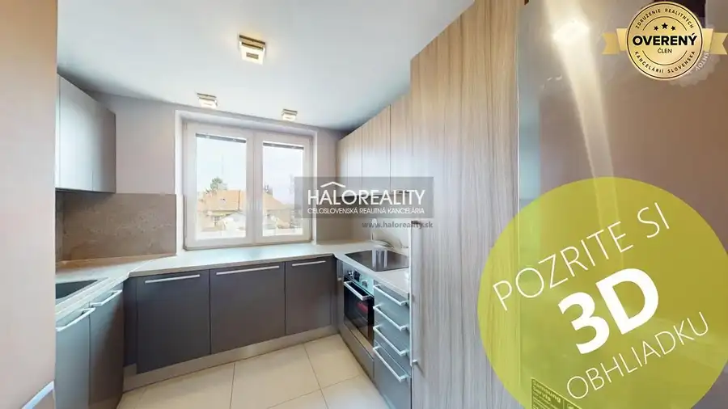
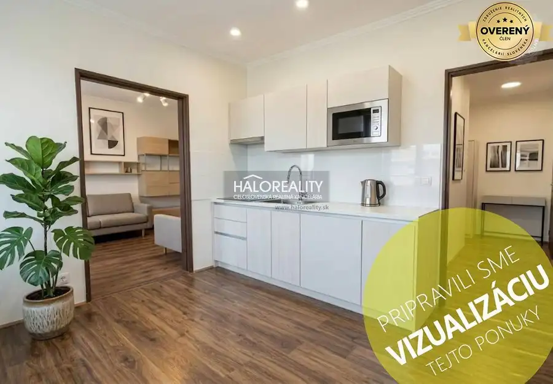
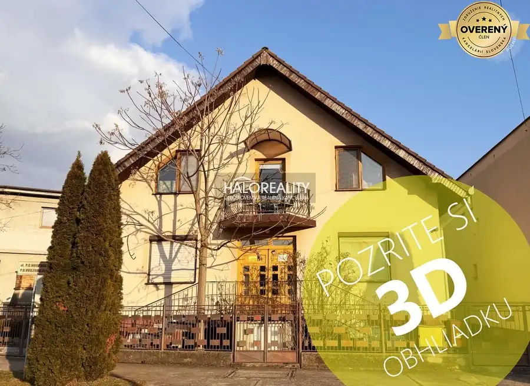
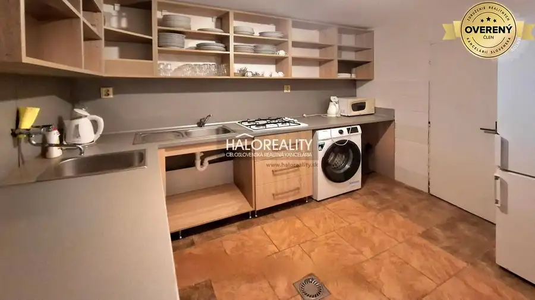
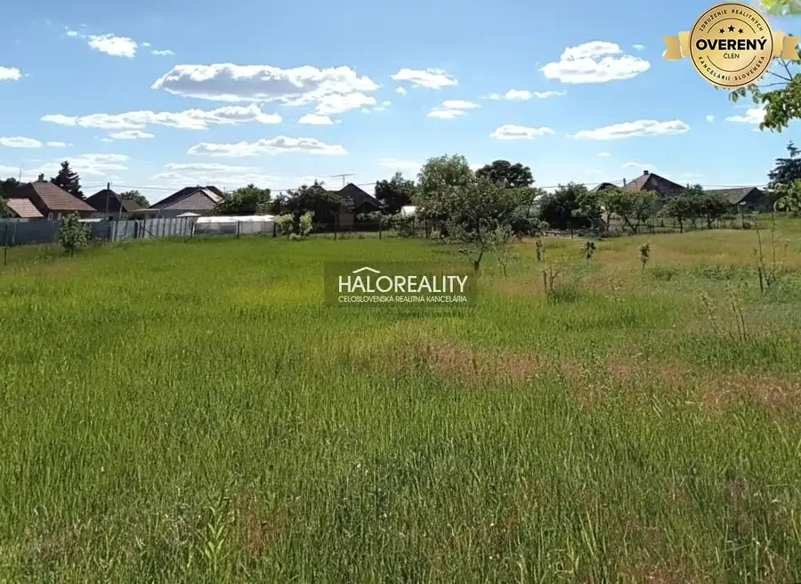
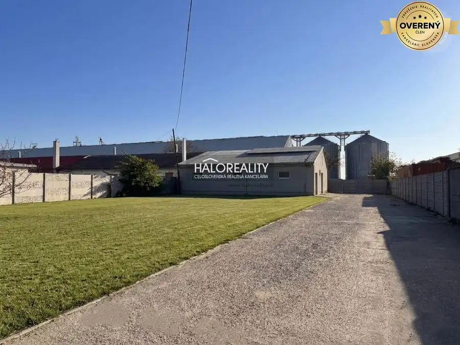
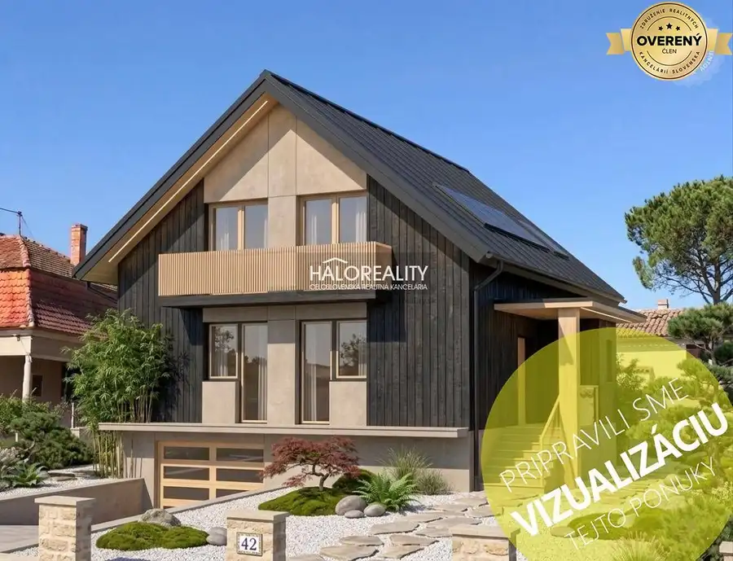
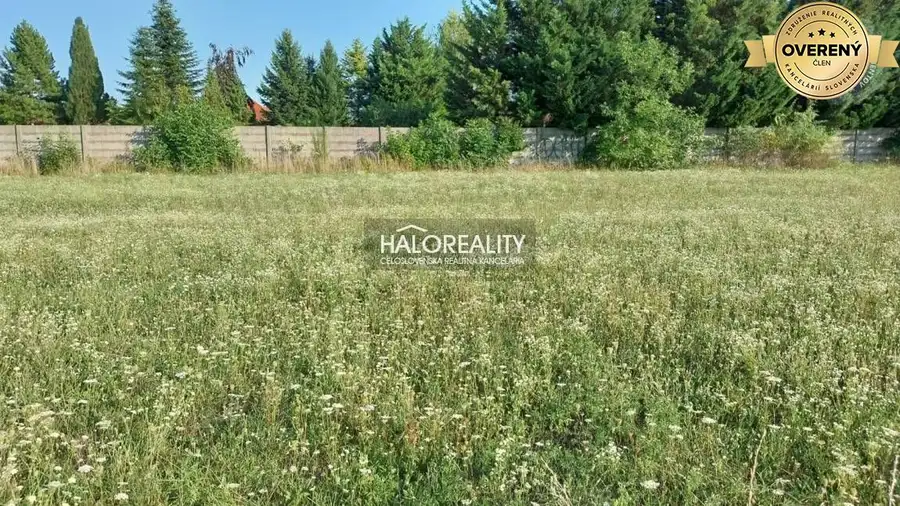

Aktuálna ponuka
Nehnuteľnosti, ktoré ponúkam
9 nehnuteľností na predaj a prenájom. Vyberte typ, alebo napíšte lokalitu.
9 z 9 ponúk

Záhrady9 22 000 €Predaj, záhradný pozemok 404 m2 Komárno, Čerhát, s... Komárno 404 m² Ponúkame vám na predaj slnečný, kompletne oplotený pozemok o rozlohe 404 m2, v obľúbenej lokalite Čerhát, situovaný v bezprostrednej blízkosti…
Byt9 148 000 €Predaj, trojizbový byt Komárno, Ďulov Dvor, s výhoda... Komárno 3-izbový71 m² Ponúkame vám na predaj výnimočný 3-izbový byt v tichej lokalite Ďulov Dvor, ktorý svojím vybavením a možnosťami smelo konkuruje rodinnému domu. Tento…
Byt9 45 000 €Predaj, jednoizbový byt Radvaň nad Dunajom, pár metr... Radvaň nad Dunajom 1-izbový35 m² Ponúkame vám na predaj 1 izbový byt s vlastným kúrením v obci Radvaň nad Dunajom. Breh rieky je vzdialený len na dve minúty pešo. Pokojné prostredie,…
Rodinné domy9 185 500 €Predaj, rodinný dom Veľký Meder - EXKLUZÍVNE HALO RE... Veľký Meder 8-izbový340 m² Ponúkame Vám na predaj ubytovací rodinný dom so zastavaným podkrovím v termálnom meste Veľký Meder, ktorý v súčastnosti slúži ako rodinný penzión.…
Rodinné domy9 295 000 €Predaj, rodinný dom Podhájska Podhájska 1 m² Ponúkame Vám na predaj vidiecky rodinný dom v rekreačnej obci Podhájska v blízkosti komplexu termálneho kúpaliska. Rodinný dom o rozlohe 367 m2 sa…
Záhrady6 33 000 €Predaj, záhradný pozemok 1652 m2 Marcelová - EXKLU... Marcelová 1652 m² Ponúkame na predaj výnimočný, priestranný pozemok s rozlohou 1652 m2 v obci Marcelová. Tento slnečný pozemok sa nachádza v intraviláne mimoriadne…
Nebytové priestory8 278 000 €Predaj, výrobný priestor Veľký Meder, v priemyselnej... Veľký Meder 1722 m² Ponúkame vám na predaj výrobnú halu s plochou 386 m2, na pozemku o rozlohe 1722 m2, v priemyselnej zóne mesta Veľký Meder, ktorá poskytuje zázemie…
Rodinné domy9 155 000 €Predaj, rodinný dom Radvaň nad Dunajom, s platným st... Radvaň nad Dunajom 6-izbový330 m² Ponúkame na predaj rozostavaný 6 izbový rodinný dom v obci Radvaň nad Dunajom, s ideálnym rozmerom pozemku 830 m2 a platným stavebným povolením do…
Pozemok2 115 000 €Predaj, pozemok pre rodinný dom 664 m2 Nové Zámky Nové Zámky 664 m² Ponúkame na predaj stavebný pozemok určený na výstavbu rodinného domu - Nové Zámky, 664 m2, lukratívna a tichá lokalita. STAV NEHNUTEĽNOSTI: Tento…Tomuto výberu zatiaľ nezodpovedá žiadna ponuka. Napíšte mi, čo hľadáte.